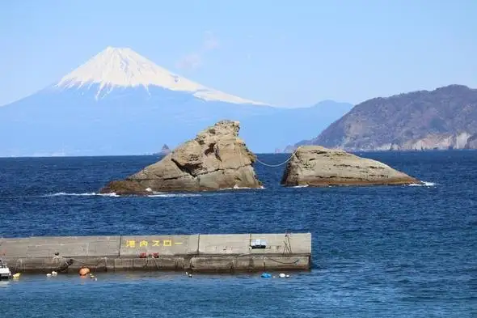
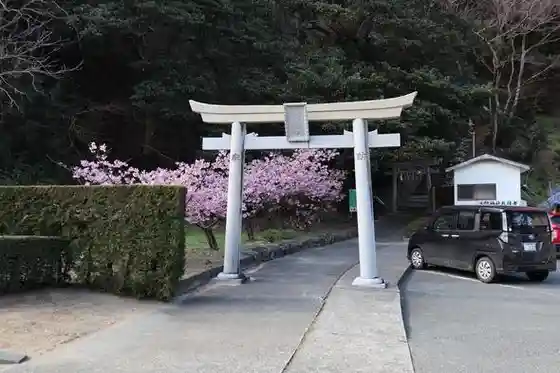
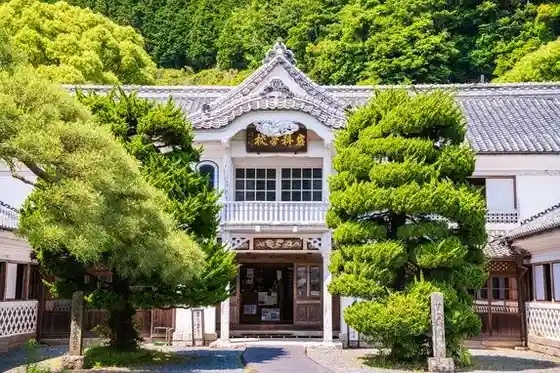
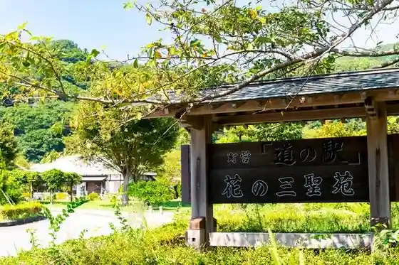

Japan / Shizuoka / Matsuzaki
Matsuzaki
Matsuzaki · Shizuoka
Matsuzaki
Highlighted on the Shizuoka map.

Sights
Kumomi Coast
Matsuzaki, Shizuoka · 055-845-0844 · Official / source link
Kumomi Asama Shrine
Matsuzaki, Shizuoka · 0558-45-0844 · Official / source link

Kuni Shitei Juyo Bunkazai Iwashina Gakko
Matsuzaki, Shizuoka · 0558-42-2675 · Official / source link

Roadside Station Hana no San Hijiri En Izu Matsuzaki
Matsuzaki, Shizuoka · 0558-42-3420 · Official / source link

Izu no Chohachi Art Museum
Matsuzaki, Shizuoka · 0558-42-2540 · Official / source link
Sengan Mon
Matsuzaki, Shizuoka · 0558-45-0844 · Official / source link
Ishibe Beach
Matsuzaki, Shizuoka · 0558-42-0745 · Official / source link
Iwaji Beach
Matsuzaki, Shizuoka · 0558-42-0745 · Official / source link
Kumomi Beach
Matsuzaki, Shizuoka · 0558-42-0844 · Official / source link
Ina Shita Shrine
Matsuzaki, Shizuoka · 090-7919-7780 · Official / source link
Osawa Onsen Yoda Yuki Sho
Matsuzaki, Shizuoka · 055-836-3020 · Official / source link
Kokyo no Yado Izu Matsuzaki So
Matsuzaki, Shizuoka · 055-842-0450 · Official / source link
Matsuzaki Beach
Matsuzaki, Shizuoka · 0558-42-0745 · Official / source link